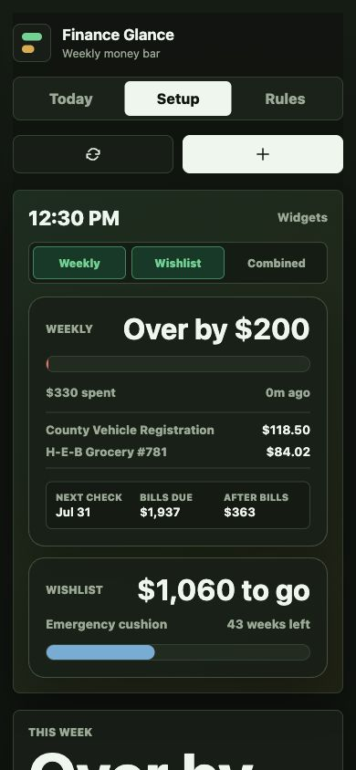

Finance Glance shows which confirmed bills are due before the next check and what remains after them.
What makes it different
Budgeting starts with the bills that actually hit each paycheck.
Detected recurring charges become suggestions. Users confirm, edit, ignore, or mark bills missing before they affect allowance.
The same data powers weekly spending, upcoming bill timing, wishlist progress, and savings streak widgets.
The model supports irregular income, maternity leave checks, variable utilities, refunds, transfers, and CSV fallback.
Product preview
Dashboard and mobile widget views
Screenshots use fake demo data from a sandbox household fixture. They do not contain real account numbers, real bank data, Plaid access tokens, or personal credentials.

Plaid integration
Finance Glance uses Plaid Link, not stored bank passwords.
Plaid connects checking and savings accounts so the app can import transactions, read account balances, detect recurring bill candidates, and verify savings progress.
- Plaid products
- Transactions and account balance data for checking and savings accounts.
- Data purpose
- Recurring bill review, weekly spending allowance, recent transaction widgets, and savings verification.
- Credential handling
- Users connect through Plaid Link. Finance Glance does not collect or store bank usernames or passwords.
- Token handling
- Plaid secrets and access tokens stay server-side. Browser code receives sanitized account, balance, and transaction data only.
Security and hardening
Private by default, with real-data gates before production.
Finance Glance is being proven in sandbox and private alpha first. The current build separates browser UI from Plaid secrets, avoids raw credential handling, and keeps the production checklist explicit before broader use.
Users authenticate through Plaid Link. Finance Glance does not collect, store, or proxy bank usernames and passwords.
Plaid secrets and access tokens stay out of browser JavaScript. The UI receives normalized account, balance, and transaction data.
The prototype backend binds to loopback by default, checks allowed browser origins, applies basic security headers, and can disable demo endpoints.
The app includes local clear-data and disconnect-bank flows so linked account data can be removed during testing.
Security regression and secret-scan tests check request handling, demo gating, frontend escaping, and obvious committed token mistakes.
Before public launch: user auth, encrypted token storage, webhook handling, monitoring, account deletion/revoke flows, and Plaid production approval.
Current status
Private local alpha for a two-person household.
The first real-data phase is personal access for the creator household. The app currently runs as a local prototype with a private source repository, sandbox Plaid support, fake messy-data simulation, CSV fallback, and security regression checks.